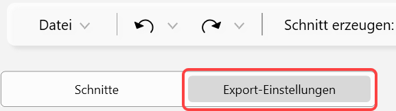
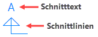

 |
Auf der Registerkarte Export-Einstellungen geben Sie an, wie die Kanten des Schnitts ausgegeben werden sollen. Zudem haben Sie die Möglichkeit, die Darstellung der Schnittpfeilbezeichnung und der Schnittpfeile zu definieren.
Die Einstellungen werden im aktiven Profil gespeichert.
Wählen Sie aus den Dropdown-Listen ( ) die entsprechenden Eigenschaften.
) die entsprechenden Eigenschaften.
Sichtbare Kanten
Mit diesen Parametern werden alle Kanten gezeichnet, die in der Schnittebene liegen und von keinen Objekten verdeckt werden.
Anmerkung: Wenn die Option Überschneidende Linien reduzieren (s. weiter unten) deaktiviert ist, werden sichtbare Kanten über geschnittene Kanten gelegt. Sie können Geschnittene Kanten mit den gewählten Parametern darstellen, indem Sie sie über [Konst 3 | EleAtr | Ebene] in der Ebene höher setzen. |
Versteckte Kanten
Wenn Objekte in der Schnittebene von z. B. einer Wand, Tür oder Decke verdeckt werden, werden sie mit den hier gewählten Parametern gezeichnet.
Geschnittene Kanten
Mit diesen Parametern werden alle Kanten gezeichnet, die am Schnittansatz angeschnitten werden.
Schnittflächen
Die Schnittflächen geschnittener Kanten können gefüllt oder schraffiert werden. Ist der Haken nicht gesetzt, werden nur die Konturen exportiert.
Schnittflächen exportieren Aktivieren Sie diese Option, um die Schnittflächen geschnittener Kanten mit einer Füllung oder einer Schraffur zu versehen. Wählen Sie anschließend die gewünschte Stiftnummer für die Darstellung. -Wenn die Schnittflächen als Füllungen exportiert werden sollen, setzen Sie einen Haken bei Als Füllung exportieren. -Soll stattdessen eine Schraffur verwendet werden, wählen Sie den passenden Schraffurtyp aus der Auswahlliste. |
Texte
Mit diesen Parametern definieren Sie die Darstellung der Überschrift des Schnittes.
Zum Beispiel: A-A, B-B, C-C usw.
Textgröße
Geben Sie die Textgröße in [mm] ein.
Stiftnummer
Wählen Sie die Schriftfarbe.
Breitenfaktor
Wählen Sie einen Breitenfaktor für den Text oder tippen Sie diesen ein.
·Ein Breitenfaktor = 1 stellt den Text unverzerrt dar.
·Ein Breitenfaktor < 1 staucht den Text.
·Ein Breitenfaktor > 1 streckt den Text.
Font
Wählen Sie die Schriftart. Bei TrueType-Schriften können Sie zusätzlich Textauszeichnungen (fett, kursiv, unterstrichen, durchgestrichen) wählen.
Textauszeichnungen
Wählen Sie eine oder mehrere Auszeichnungen für den Text.
|
|
|
|
Fett |
Kursiv |
Unterstrichen |
Durchgestrichen |


Schnittpfeile
Mit diesen Parametern definieren Sie die Darstellung der Schnittpfeillinien und -texte.

Pfeildarstellung
Wählen Sie die Darstellung der Schnittpfeile.
Stiftnummer
Wählen Sie die Stiftnummer, mit der die Linien der Schnittpfeile und die Schnitttexte dargestellt werden sollen.
Schnitttexte
·Geben Sie die Textgröße in [mm] ein.
·Wählen Sie die Schriftart.
·Wählen Sie eine oder mehrere Auszeichnungen für den Text.
Allgemein
Schnitte als Gruppe erstellen
Aktivieren Sie die Option, um Schnittebenen in einzelnen, anwenderdefinierten Gruppen zusammenzufassen. Im Gruppenmanager [Konst 3 | Gruppe | Managr] erhalten die Schnitte die jeweilige Schnittbezeichnung (Schnitt A-A, Schnitt B-B usw.).
Übereinanderliegende Linien reduzieren
Aktivieren Sie diese Option, um Linien, die übereinanderliegen und vom unterschiedlichen Kantentyp sind, zu löschen oder zu kürzen.
Hierbei gilt die folgende Hierarchie:
1.Geschnittene Kanten
2.Sichtbare Kanten
3.Versteckte Kanten
Beispiel: Wenn eine sichtbare Kantenlinie über einer versteckten Kantenlinie liegt, und die Start- und Endpunkte dieselben sind, wird Letztere gelöscht.
Anmerkung: Wenn die Option deaktiviert ist, werden sichtbare Kanten über geschnittene Kanten gelegt. Sie können Geschnittene Kanten mit den gewählten Parametern darstellen, indem Sie sie über [Konst 3 | EleAtr | Ebene] in der Ebene höher setzen. |
Info
Zeigt das aktive Profil der Zeichnung an, in der das IFC Section Tool geöffnet wurde. Wird das Profil in ISBCAD gewechselt, werden bei der Übergabe die Stiftnummern des gewechselten Profils verwendet.
Zugehörige Aufgaben:
Zugehörige Referenzen: